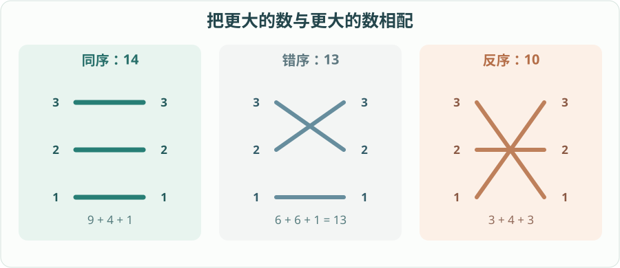
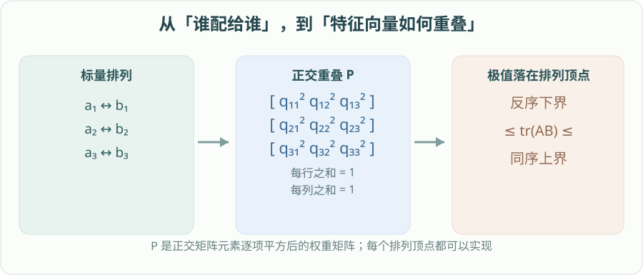
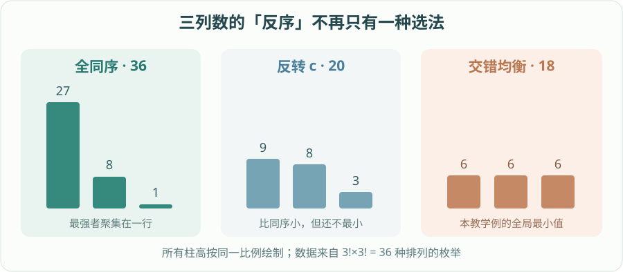

Understanding Rearrangement Inequalities
为什么把最大的数与最大的数相乘，就会得到最大的乘积和？当「重新排队」变成「旋转矩阵」，或者从两列扩展到三列，哪些结论仍然成立，哪些会意外失效？
01 · 交换位置，会改变什么？
给三种商品设置三个权重。权重与收益都可以重新配对：如果你的目标是让加权收益最大，应该让高权重遇到高收益，还是刻意错开？
例如，固定权重 a = (3, 2, 1)，收益 b 同样是 (3, 2, 1)。同序配对得到 3×3 + 2×2 + 1×1 = 14；反序则为 3×1 + 2×2 + 1×3 = 10。其余四种排列都夹在两者之间。

将两个长度为 n 的实数列从大到小排序，记为 a₁ ≥ ··· ≥ aₙ、b₁ ≥ ··· ≥ bₙ；π 是任意排列，bₙ₊₁₋ᵢ 表示将 b 反转。则有：
这里 不要求元素非负，只要求两列数的相对排序已确定。等号不必对应唯一排列：重复值会造成大量等价搭配。
02 · 为什么「交换一次」就能证明？
假设 a 的两个位置满足 aᵢ ≥ aⱼ，但配给它们的 b 值却满足 bᵢ < bⱼ。交换这两个 b 值，变化量恰好是：
这表明消除一个「逆序配对」绝不会降低总和。重复交换，就会抵达同序排列，从而得到上界；反过来消除「同序配对」，就能得到反序下界。这是一种局部交换、全局最优的证明。
交换过程中，a、b 各自的元素多重集完全不变。
只有当两边对应差值都严格大于 0，交换收益才严格为正。
03 · 矩阵中的「配对」是什么？
把两个序列写在对角矩阵里，就有 tr(AB) = Σ aᵢbᵢ。对一般的实对称 n×n 矩阵 A、B，特征向量给出了更丰富的「配对」方式：不再只有排列，还可以任意正交旋转。
λᵢ(A) 和 λᵢ(B) 分别代表按从大到小排列的实特征值（可以是负数）。矩阵交换时，迹不会改变：tr(AB)=tr(BA)，因此这个内积式仍然适用。

04 · 关键桥梁：正交矩阵的平方，形成双随机权重
设 A=U diag(a) Uᵀ，B=V diag(b) Vᵀ，并令 Q=UᵀV。矩阵 Q 是正交的。把 tr(AB) 展开，结果不是随意加权，而是每个 aᵢ 与 bⱼ 的权重 qᵢⱼ²：
由于 Q 的行和列都是单位向量，其平方元素组成的矩阵 P=(qᵢⱼ²) 满足 Pᵢⱼ≥0，每行和每列之和都为 1，即双随机矩阵。Birkhoff–von Neumann 定理说任何双随机矩阵都是排列矩阵的凸组合，因此上式落在一系列排列点积之间；再用第 01 节的重排不等式就得到上界和下界。
这里特意区分正交基平方得到的正交随机矩阵与全部双随机矩阵：前者是后者的子集。但两端排列矩阵都能由正交 Q 实现，所以界仍然是紧的。
另一条证明路线是优化 tr(AQ BQᵀ)：沿反对称方向做无穷小正交旋转，最优点满足对易条件 [A,QBQᵀ]=0，最终退回共同特征基中的标量重排。它揭示为何「极值对应对齐」，但上述双随机证明更容易直接检查每一步。
05 · 当矩阵不是对称的：奇异值上界
若 X、Y 是形状相同的实 m×n 矩阵，定义奇异值 σ₁≥···≥σᵣ≥0，r=min(m,n)。一般矩阵可以通过 SVD 讨论，得到最常见的 von Neumann trace inequality：
注意它与式 (3) 的边界：一般矩阵的奇异值版是绝对值上界，不是把式 (3) 中的两个端点随意替换为奇异值；特征值版需要实对称条件。对于复矩阵，转置应替换为共轭转置，迹再取复模长。
这条上界常用于正交 Procrustes、谱优化与正交化更新方向等推导；但它本身并不意味着某个特定优化器一定收敛更快。
06 · 三序列：为什么最大值仍然能「全都同序」？
现在给每件商品增加第三种权重 c。固定三列非负数，从大到小排序，通过各列的独立排列得到三项相乘求和。此时三列同序依然给出最大值：
可验证的推导路径是：设 yᵢ=bπ(i)cτ(i)，用按部分求和（Abel 变换）分解 Σaᵢyᵢ。对任意前 k 项，Σᵢ≤k yᵢ 不超过两列最大 k 个数同序相乘的和 Σᵢ≤k bᵢcᵢ；再利用 aₖ−aₖ₊₁ ≥0 与 aₙ≥0，逐项界定全部加权前缀。得到式 (6)，并可递归推广到更多非负序列。
非负假设在这里不可直接删除。双序列重排不等式允许负数，但三列乘积引入了符号翻转；直接沿用「同序最大」会失效。
07 · 为什么三列的最小值不是「全都反序」？
两列时，“反序”有明确含义；但三列彼此都想反序是不可能的。对于同一组 (3,2,1)，三列同序给出 36；仅反转 c 得到 20；交错安排可使三个乘积全变成 6，从而得到 18。

令三项乘积为 x₁,x₂,x₃，AM–GM 告诉我们，在 x₁x₂x₃ 固定且非负时，Σxᵢ≥3(x₁x₂x₃)^(1/3)，等号在三项相等时成立。因排列不改变所有项的总乘积，这提供寻找最小值时趋于均衡的直觉；但它只是下界，并不保证能找到实现等号的排列。
更一般的三维轴向指派问题在特殊的乘积型成本下，其最大化版本可多项式时间解决，而最小化版本已有 NP-完全性结果。不能据此说每个具体的三序列最小值算例都困难：例如 n=3 完全可以穷举，困难说的是随 n 增长的一般优化问题。
08 · 多矩阵：上界仍然整齐，下界却更微妙
对三个实 n×n 方阵 X、Y、Z，重复奇异值迹上界与乘积的谱不等式，可以得到：
但即使三者都为对称半正定矩阵，tr(XYZ) 也可能为负。一个最小规模的明确反例是：取 u=(1,0)ᵀ、v=(1,1)ᵀ、w=(−1,2)ᵀ，并设 X=uuᵀ、Y=vvᵀ、Z=wwᵀ。三者均为秩一半正定矩阵，却有：
与此相对，两个半正定矩阵乘积的迹一定非负，因为 tr(XY)=tr(X½ Y X½)≥0。可见把两个矩阵的直觉直接平移到三个矩阵，是一个危险的跳步。
09 · 自己改变排列，观察均衡与极值
下面固定 a=(3,2,1)，b=(3,2,1)，只让 b 与 c 的配对方式改变。三个预设状态都可以手算，并与文末标准库 Python 穷举核对。
总和 ；与全局最大 36、最小 18 对比。
注意：这只是三元素排列空间的可视实验，不是用于求解大规模 NP-hard 指派问题的算法。想复核所有 36 组排列，执行同目录的 mini_rearrangement.py：
python posts/foundations/rearrangement-inequalities/mini_rearrangement.py10 · 证据、边界与继续阅读
本文从苏剑林的《重排不等式及其推广》梳理概念，但重新组织了证明顺序、视觉形式与数值算例。该文章是数学综述而非机器学习模型的实证论文：因此没有捏造数据集、SOTA 指标或训练消融。所有教学数值均可通过脚本独立复核。
- 苏剑林（2026），《重排不等式及其推广》。本文讨论主题的原始出处；源站部分访问可能限制自动抓取。
- The Rearrangement Inequality and Its Generalizations，第三方英文译文，帮助核对章节与关键概念；并非正式论文。
- Optimisation and trace inequalities，Theorem 11.4。为对称矩阵的双随机证明与奇异值版本提供交叉验证。
- Burkard, Rudolf & Woeginger (1996)，乘积型成本的三维指派最大化与最小化复杂度。
- Yue (2026), A Matrix Generalization of the Hardy–Littlewood–Pólya Rearrangement Inequality。进一步研究矩阵版本及其优化应用；不是上文基本定理的原始提出来源。
阅读时请区分三类结论：精确上/下界（式 1、3）、只保证上界（式 5、6、8）、仅提供优化直觉与下界（式 7）。尤其不要把「多列倾向均衡」误认为一般情况下已经有闭式最小解。